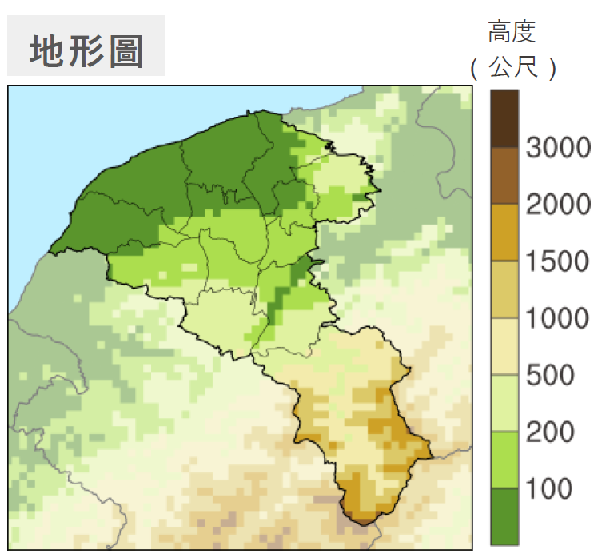
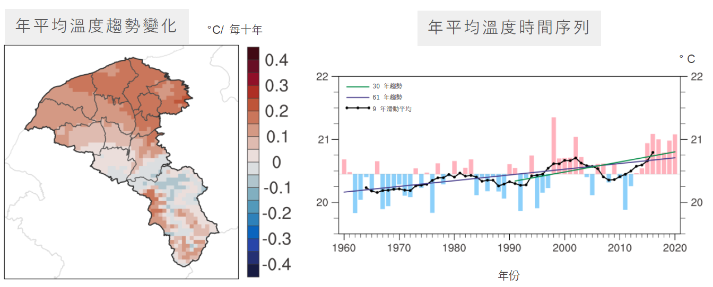
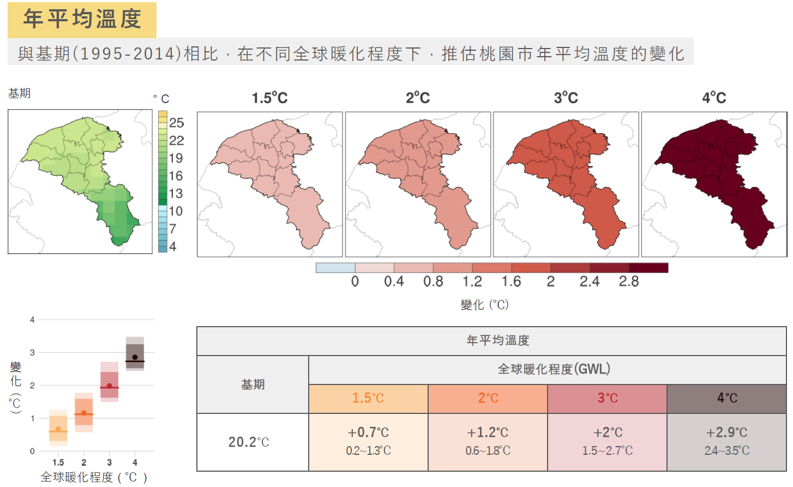

桃園市位於臺灣本島西北部 [cite: 35]，地形豐富，包含平地、山區與高山區 [cite: 1093]。年平均溫度約 20.6°C，年降雨量中位數為 1,780.9 毫米 [cite: 41, 103]。

過去 60 年間，桃園年平均溫度每十年增加 0.09°C [cite: 347]。然而，近 30 年 (1991-2020) 的增溫速度明顯加快，每十年增加達 0.16°C [cite: 348]。

在全球暖化 2°C 的情境下，推估桃園將面臨以下挑戰：
